Chapter 7 asked: I am pointing here, where will I end up? That is the question a radar controller creates for you. This chapter asks the question you ask, on every flight you ever plan — I want to end up there, so where do I point?
You have drawn a straight line from your departure to your destination and measured it: 040°(T). Your aircraft will true 146 knots. The forecast wind is 315/20.
Now answer the only question that matters before you start the engine: what number do you put on the compass?
It is not 040. If you fly 040 you will arrive somewhere to the right of where you meant to be, and the longer the leg the further right you will be. You have to aim off — upwind — and the whole skill is knowing by exactly how much, and what it costs you in speed over the ground.
Chapter 7 gave you the machinery. This chapter turns it around and points it at the real question.
Everything the wind face of a navigation computer has ever done — and everything the CX-3 does with a wind — is one of three jobs. They are the same triangle of velocities each time. What changes is which side you already know and which one you are hunting.
| To find | From | When you use it | Where |
|---|---|---|---|
| Track Ground speed |
Heading TAS W/V |
When you are held on a heading somebody else chose — a radar vector, an engine-out drift-down, a mandatory departure heading. | Chapter 7 |
| Heading Ground speed |
Track TAS W/V |
Flight planning, and re-planning in the air when the track changes or the wind turns out to be something else. This is the common one. | This chapter |
| W/V | Heading TAS Track Ground speed |
Wind finding in flight. The wind you find is more recent and more local than any forecast you were handed on the ground. | Chapter 8B |
The three look alike on the page and the difference is only in which quantities the question hands you. Before you touch anything, do this: list what you were given.
Given a heading? Row one. Given a track and asked for a heading? Row two. Given both a heading and a track? Row three — you are finding the wind, and you should already be reaching for a different function.
It takes four seconds and it is the single highest-value habit in this chapter.
It is tempting to file "given heading, find track" as the easy one that exists only to explain the triangle. It is not. Here is the day it saves you.
You are established on airway R123, on a track you planned and a heading you worked out for it, with the forecast wind still set on your computer. At 1003 ATC gives you a mandatory radar heading of 030°(T) for traffic. You come off the airway. You note your VOR/DME position at that moment — and this is the habit that matters, because it is the last certain thing you will have for six minutes.
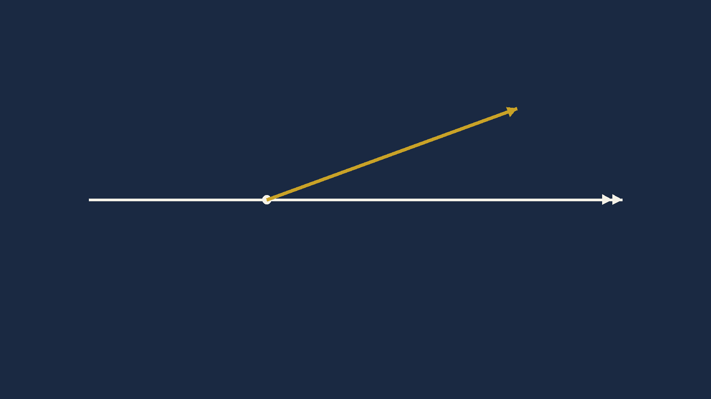
At 1009 the conflict clears and you are told: own navigation to Clacton. At the same moment the VOR unlocks. You have no area navigation. Where are you, and what track takes you to Clacton?
The six minutes, worked. Forecast W/V 315/15, TAS 160 kt, heading flown 030°(T), from 1003 to 1009.
1. The wind is from 315, so it points toward 135°.
2. Add the two vectors, east and north:
E = 160·sin030 + 15·sin135 = 90.61
N = 160·cos030 + 15·cos135 = 127.96
3. Ground speed:
√(90.61² + 127.96²) = 156.8
4. Track:
tan⁻¹(90.61 ÷ 127.96) = 35.3°
Track 035°(T) · GS 157 kt · drift 5°S
TCrs, TAS,
WDir, WSpd and returns GS and
CHdg.GS, TAS, TCrs,
THdg and returns the wind.Not a CX-3 function — use Method 1
Which do you use? There is no choice here, and that is worth knowing before you are sitting in cloud with six minutes of DR to run. The CX-3's two wind functions solve the planning problem and the wind-finding problem. The Chapter 7 case — heading and wind in, track out — is a genuine gap in the instrument. Know the triangle and you are never stuck; reach for a menu and you will hunt for a function that does not exist.
Now the part that turns a number into a position. Six minutes is one tenth of an hour. At 157 knots over the ground that is 15.7 nautical miles. From the position you noted at 1003, draw 035°(T) and step off 15.7 miles. That is your DR position — dead reckoning — and it is the best estimate anyone can give you.
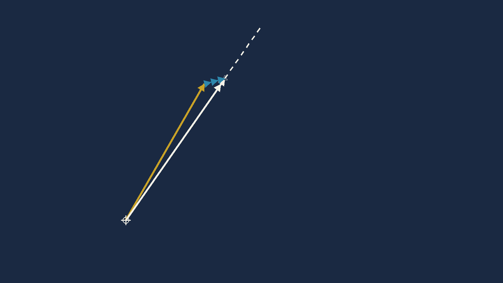
You used row one of the table to find where you had got to, and then immediately needed row two to work out the heading that would take you to Clacton from there.
The three jobs are not three separate exam topics. They are three moves in one continuous argument with the wind, and a real flight uses all of them inside ten minutes.
This is the one you will use for the rest of your flying life. You join your turning points on the chart with a ruler and measure the line. The track is now known. What you do not know is the heading that will hold you on it, because the wind is going to push you off, and you do not know your ground speed, because the wind is going to help or hinder you along the way.
Take the example from the planning table:
Before the correct method, fly the wrong one for a moment, because the wrong one is what the exam options are built from.
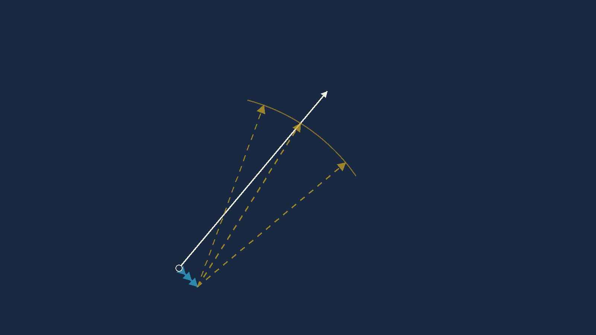
Suppose you simply set 040° as the heading and flew it. Run Chapter 7's arithmetic on that and you get a track of 048° — eight degrees of starboard drift, and eight degrees to the right of where you wanted to be.
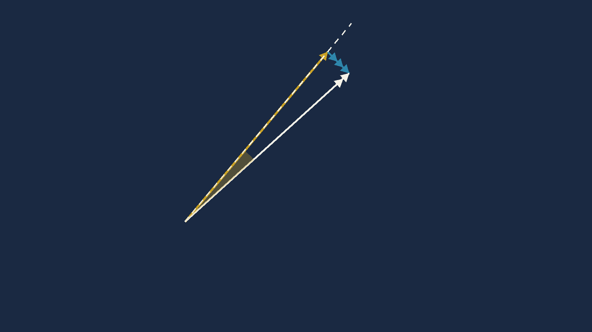
Flying 040 gave 8° starboard drift. So the fix is to aim 8° to the left — try 032 — and the wind will push you back onto 040.
That is the reasoning, and it is correct. The only question left is whether the drift is still 8° once you have swung the nose, and that is Section 4.
Chapter 7 defined them as a mirrored pair. Heading 090, track 097 means drift +7° (starboard) and WCA −7°. Same seven degrees, opposite sense.
The formula below computes the drift, not the WCA.
sin⁻¹(W·sinθ ÷ TAS) is the angle at the
aircraft between the air vector and the ground vector, and that angle is
the drift. So it goes into the identity you already know, read backwards:
Track = Heading + Drift → Heading = Track − Drift
Why this matters more than a naming quibble. Take the same wind
and put Chapter 7’s signed WCA into this chapter’s subtraction
by mistake: 040 − (−7.84) = 047.8. You have aimed
16 degrees the wrong way — and it is the reversed-wind error
the sanity check on the next page is built to catch. One quantity per formula. The
formula takes drift.
And on the machine: the CX-3’s FLT
→ Wind Correction function outputs a field called WCA. It is an
output you read, never an input you compute with, so its sign convention
cannot bite you here — but check which way your unit signs it before you quote
it in an answer.
Worked example 8A.1. TAS 146 kt, W/V 315/20, desired track 040°(T). Find the heading to fly and the ground speed.
1. Turn the wind round. From 315 means it points toward 135°.
2. Angle between the wind and the track:
θ = 135 − 040 = 95°
3. The drift you are going to get
(starboard positive):
Drift = sin⁻¹(20 × sin95 ÷ 146)
= sin⁻¹(19.92 ÷ 146)
= sin⁻¹(0.1365) = 7.84°
4. Heading:
HDG = 040 − 7.84 = 032.2°
5. Ground speed:
GS = 146·cos(7.84) + 20·cos(95)
= 144.63 − 1.74 = 142.9
HDG 032°(T) · GS 143 kt
TCrs = 040 — the track you measured
off the chart, not the heading.TAS = 146.WDir = 315, WSpd =
20. Enter the wind as it is given — the direction
it comes from. The machine turns it round for you.Var = 0 and Dev = 0. See the
red box below. This step is not optional.CHdg and GS.HDG 032°(T) · GS 143 kt
Which do you use? Both, and for
different reasons. In an exam with one triangle to solve, the formula is four
keystrokes on a scientific calculator and it never asks you what the variation
is. On a real flight plan with six legs, the PLAN menu carries the
wind, TAS, variation and fuel flow across every leg and totals the trip at the
bottom — and that is Chapter 8B.
Sanity check — do this before you believe any
answer. The wind is from 315, which is off your left shoulder
on a track of 040. So it must push you right, and you must therefore aim
left. Heading 032 is left of track 040. Correct.
And it is very nearly a pure crosswind (θ = 95°, almost square on), so
it should barely change your speed along the track. Ground speed 143 against a
TAS of 146 — three knots lost. Correct.
If you had produced heading 048 and ground speed 146, you would have applied the
wind backwards — and both errors appear together. The heading has swung
8° to the wrong side of the track, and the three knots you should have
lost have become a small gain, putting the ground speed just
above the TAS instead of just below it. Whenever the wind is forward of
the beam and your ground speed comes out higher than your TAS, you have reversed
the wind.
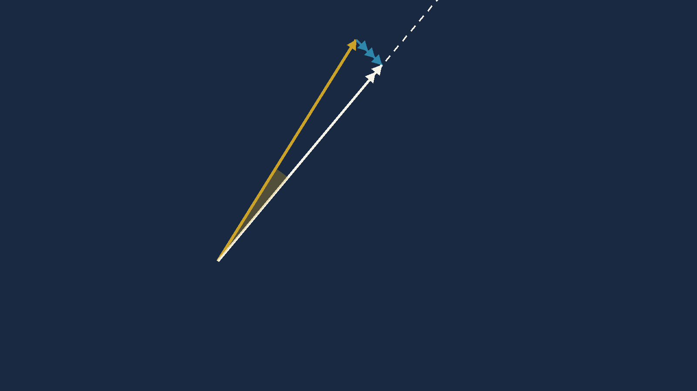
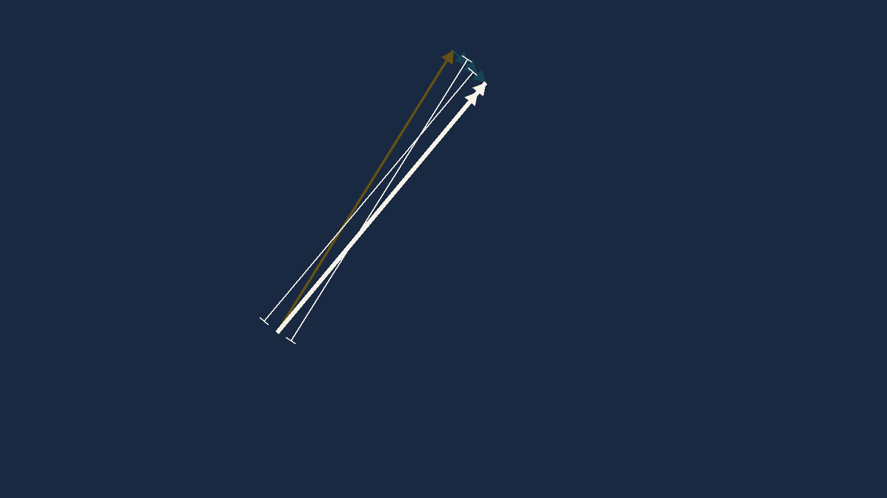
The CX-3's PLAN leg outputs a field called CHdg
— compass heading. Its per-leg inputs include
Var and Dev.
Every question in this chapter is worked in degrees TRUE. If a variation is left sitting in that field from a previous problem, the number the machine hands you is not the answer to the question you were asked, and it will be wrong by exactly the variation — which in India is enough to land you on a different option.
Set Var = 0 and Dev = 0 before every
true-heading problem, and check them, every time. With both at zero the
compass heading, the magnetic heading and the true heading are the same number,
and the output is the answer.
How I know: the CX-3 User's Guide V1.3
lists the PLAN leg inputs as Dist, TCrs,
TAS, WDir, WSpd, Var,
Dev, Rate, Dep, and its outputs as
GS, CHdg, ETE, Fuel. That
variation and deviation of zero collapse compass onto true is arithmetic, not a
quotation. FLAGGED: whether the leg screen also
displays a true heading beside CHdg is not stated in the Guide and
needs one look at a physical unit.
There is a function on the CX-3 called Wind Correction, under FLT. Its name is exactly what you are looking for and it is not what you want.
It takes GS, TAS, TCrs and
THdg, and it returns WSpd, WDir and
WCA. It solves for the wind. It is row three of the
table in Section 1, and it belongs to Chapter 8B.
To go from a known wind to a heading, you want PLAN. A student who has understood the triangle never gets this wrong; a student who has memorised menu names gets it wrong under time pressure, every time.
In the last example the drift was 8° starboard on a heading of 040 and it was still 8° starboard on a heading of 032. That is a convenient accident of that particular triangle, and it is not a rule.
Whether the drift changes when you swing the nose depends on three things: how big the wind is compared with the TAS, how far you swing, and what angle the wind was making with the heading to start with.
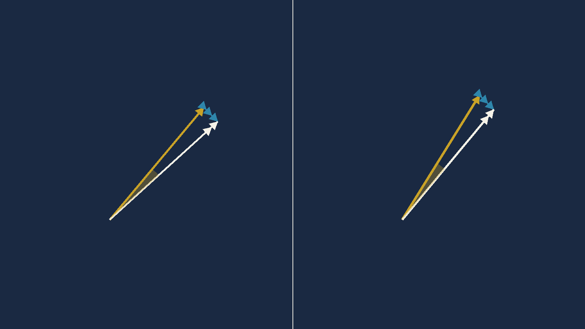
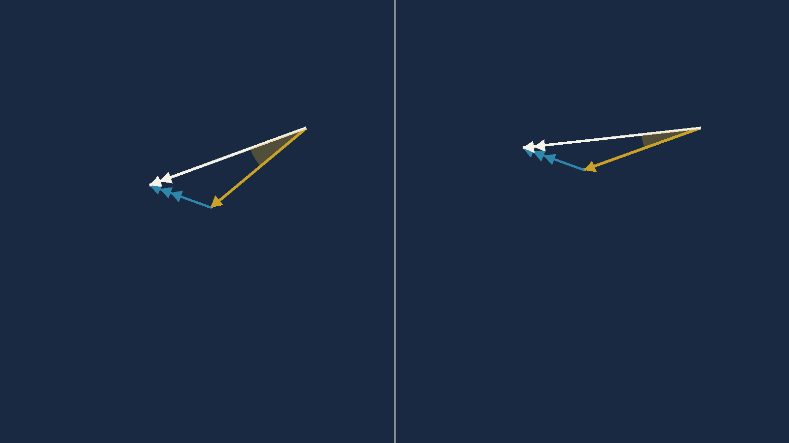
On a rotating-disc computer, changing drift is a real operational problem: your first guess at a heading gives you a drift, you apply it, and the drift you read the second time is a different number. So you go round again. And again.
On a CX-3, and in the formula, this problem does not arise. The wind correction angle is computed from the geometry in one step. There is no first guess to be wrong about.
You still need to understand it, for two reasons. It is examinable. And it is the thing that tells you, in the air, that a small heading change on a windy day is not a small change to your track.
The classical procedure for the analogue computer is called balancing the drift. It is a guess-and-check loop, and it is worth exactly one read, because the moment you understand why it existed you will understand what the electronic computer actually did for you.
Take a hard case — a slow aeroplane in a strong wind, which is where the loop bites:
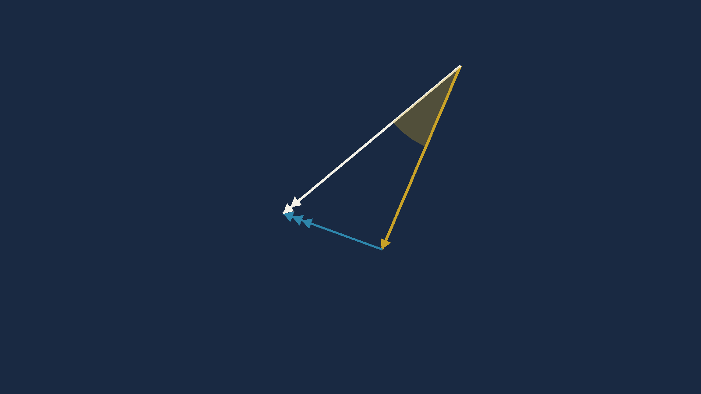
Set the desired track against the heading index and read the drift. It is 20° starboard. So swing 20° left and look again — and the drift has grown to 25°. Swing to 25° and look again: 27°. Swing to 27°: still 27°. It has stopped moving, and you have your answer.
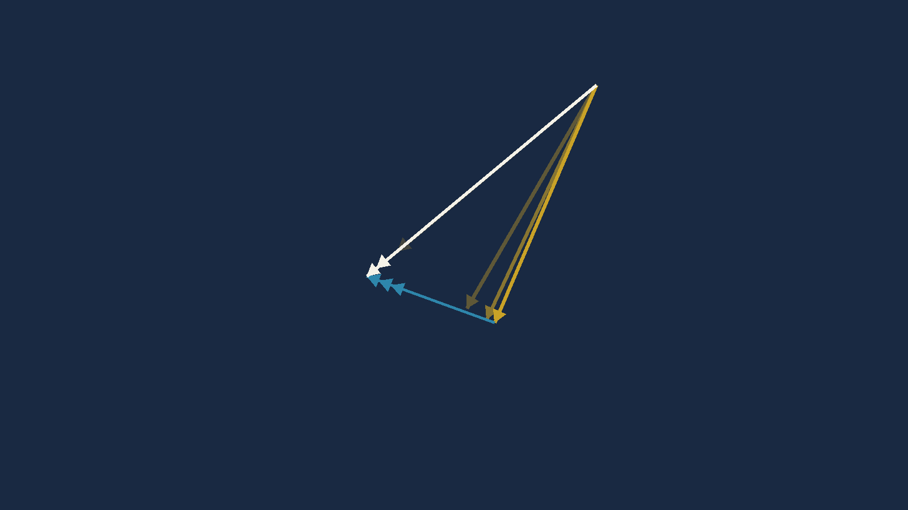
Here is that loop with the arithmetic run alongside it, so you can see that the old procedure and the modern formula are the same mathematics wearing different clothes:
| Attempt | Heading tried | Track it gives | Drift read | Book reads | On track? |
|---|---|---|---|---|---|
| 1 | 230 | 249.8 | 19.8°S | 20°S | no — 20° right |
| 2 | 210 | 235.4 | 25.4°S | 25°S | no — still right |
| 3 | 205 | 231.6 | 26.6°S | 27°S | nearly |
| 4 | 203 | 230.1 | 27.1°S | 27°S | yes |
Every drift figure the source book reads off the disc is reproduced by the arithmetic to within half a degree. The loop is not folklore — it genuinely converges. It is simply slow.
Worked example 8A.2. The same problem, solved in one step. TAS 76 kt, W/V 110/40, desired track 230°(T).
1. Wind from 110 points toward 290°.
2.
θ = 290 − 230 = 60°
3.
Drift = sin⁻¹(40 × sin60 ÷ 76)
= sin⁻¹(34.64 ÷ 76)
= sin⁻¹(0.4558) = 27.1°
4.
HDG = 230 − 27.1 = 202.9°
5.
GS = 76·cos(27.1) + 40·cos(60)
= 67.65 + 20.00 = 87.6
Watch the rounding. 87.6 rounds to 88. The published answer is 87, read off a disc. Half a knot on a 76-knot aeroplane changes nothing — but say 88 if you are asked to round.
HDG 203°(T) · GS 87.6 kt
TCrs = 230.TAS = 76.WDir = 110, WSpd =
40.Var = 0, Dev = 0.CHdg and GS.HDG 203°(T) · GS 87 kt
Four attempts, or one line. That is the whole argument for the electronic computer, and it is why this course does not teach you to balance the drift. Understand the loop; do not run it.
Sanity check. The wind is from 110 and you are
going to 230 — that is a wind on your left, and behind you.
Behind, so ground speed should beat TAS: 87 against 76, yes. On the
left, so it pushes you right and you aim left: 203 is left of 230, yes.
Twenty-seven degrees of correction is enormous, and it should be — a 40
knot wind on a 76 knot aeroplane. If a light aircraft question ever gives you a
single-figure correction with a wind that size, check it again.
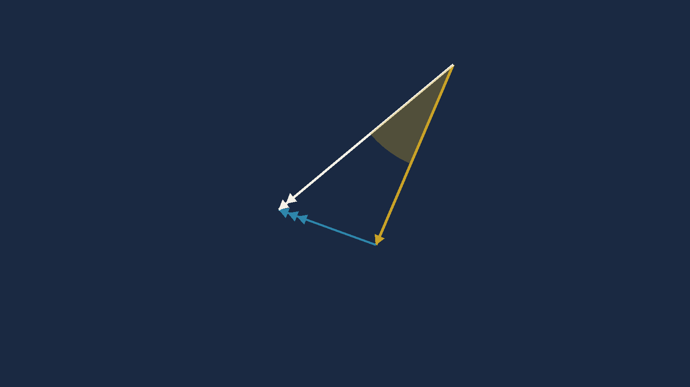
You will not be asked to run the loop. You may well be asked what it was for. The answer:
1. The first drift you read is the drift for the
wrong heading, so it is only a first approximation.
2. Applying it changes the geometry, so the drift changes
too.
3. The loop repeats until the drift you apply and the drift you
read are the same number — that is what "balanced" means, and it is the
same condition the formula satisfies in one step.
Each row hands you a W/V, a track you must make good, and a TAS. Two columns are blank: heading and ground speed.
This is row two of the Section 1 table — the planning case —
thirty times over. All directions are degrees TRUE. There is no
variation anywhere in this set, which is exactly why Var and
Dev must be sitting at zero before you start.
Work across the rows, one row at a time. Do not do them column by column. Going by rows makes you think about what each operation is for; going by columns turns it into typing.
| # | HDG°(T) | W/V | Track required°(T) | TAS | GS |
|---|---|---|---|---|---|
| 1 | 040/40 | 155 | 140 | ||
| 2 | 280/27 | 226 | 94 | ||
| 3 | 320/14 | 198 | 136 | ||
| 4 | 190/52 | 284 | 260 | ||
| 5 | 270/83 | 132 | 544 | ||
| 6 | 310/105 | 262 | 572 | ||
| 7 | 300/60 | 355 | 620 | ||
| 8 | 270/75 | 113 | 570 | ||
| 9 | 240/80 | 301 | 455 | ||
| 10 | 210/55 | 313 | 545 |
| # | HDG°(T) | W/V | Track required°(T) | TAS | GS |
|---|---|---|---|---|---|
| 11 | 335/75 | 220 | 553 | ||
| 12 | 040/20 | 005 | 110 | ||
| 13 | 125/35 | 045 | 196 | ||
| 14 | 170/23 | 113 | 210 | ||
| 15 | 145/20 | 021 | 80 | ||
| 16 | 170/30 | 287 | 220 | ||
| 17 | 300/30 | 200 | 137 | ||
| 18 | 180/40 | 130 | 190 | ||
| 19 | 280/24 | 116 | 199 | ||
| 20 | 262/90 | 234 | 605 | ||
| 21 | 210/80 | 071 | 620 | ||
| 22 | 190/80 | 339 | 523 | ||
| 23 | 305/30 | 038 | 585 | ||
| 24 | 295/60 | 355 | 515 | ||
| 25 | 340/85 | 091 | 588 | ||
| 26 | 235/66 | 032 | 485 | ||
| 27 | 055/35 | 197 | 176 | ||
| 28 | 255/15 | 018 | 180 | ||
| 29 | 090/15 | 147 | 74 | ||
| 30 | 020/25 | 140 | 99 |
The drift column is not in the source book. It is here because it is the quantity you can check in your head: wind from the left must give starboard drift and a heading left of track, and wind from the right must give the mirror image. If a heading you calculated has drift on the wrong side, you have applied the wind backwards, and no amount of re-reading the arithmetic will show it to you as fast as that one glance.
| # | HDG°(T) | W/V | Track°(T) | TAS | GS | drift |
|---|---|---|---|---|---|---|
| 1 | 140 | 040/40 | 155 | 140 | 152 | 15°S |
| 2 | 239 | 280/27 | 226 | 94 | 76 | 13°P |
| 3 | 203 | 320/14 | 198 | 136 | 143 | 5°P |
| 4 | 272 | 190/52 | 284 | 260 | 258 | 12°S |
| 5 | 138 | 270/83 | 132 | 544 | 603 | 6°P |
| 6 | 270 | 310/105 | 262 | 572 | 496 | 8°P |
| 7 | 350 | 300/60 | 355 | 620 | 584 | 5°S |
| 8 | 116 | 270/75 | 113 | 570 | 638 | 3°P |
| 9 | 292 | 240/80 | 301 | 455 | 411 | 9°S |
| 10 | 307 | 210/55 | 313 | 545 | 555 | 6°S |
| # | HDG°(T) | W/V | Track°(T) | TAS | GS | drift |
|---|---|---|---|---|---|---|
| 11 | 227 | 335/75 | 220 | 553 | 581 | 7°P |
| 12 | 011 | 040/20 | 005 | 110 | 93 | 6°P |
| 13 | 055 | 125/35 | 045 | 196 | 187 | 10°P |
| 14 | 118 | 170/23 | 113 | 210 | 197 | 5°P |
| 15 | 033 | 145/20 | 021 | 80 | 89 | 12°P |
| 16 | 280 | 170/30 | 287 | 220 | 232 | 7°S |
| 17 | 212 | 300/30 | 200 | 137 | 139 | 12°P |
| 18 | 139 | 180/40 | 130 | 190 | 162 | 9°P |
| 19 | 118 | 280/24 | 116 | 199 | 222 | 2°P |
| 20 | 238 | 262/90 | 234 | 605 | 524 | 4°P |
| 21 | 076 | 210/80 | 071 | 620 | 678 | 5°P |
| 22 | 334 | 190/80 | 339 | 523 | 590 | 5°S |
| 23 | 035 | 305/30 | 038 | 585 | 586 | 3°S |
| 24 | 349 | 295/60 | 355 | 515 | 482 | 6°S |
| 25 | 083 | 340/85 | 091 | 588 | 613 | 8°S |
| 26 | 029 | 235/66 | 032 | 485 | 545 | 3°S |
| 27 | 190 | 055/35 | 197 | 176 | 202 | 7°S |
| 28 | 014 | 255/15 | 018 | 180 | 188 | 4°S |
| 29 | 137 | 090/15 | 147 | 74 | 65 | 10°S |
| 30 | 127 | 020/25 | 140 | 99 | 109 | 13°S |
Every one of the thirty rows was recomputed from first principles — full vector solution, not the small-angle approximation — and compared against the printed key.
All thirty headings agree to within half a degree. Every one rounds to the printed value. There is no disputed heading anywhere in this set.
All thirty ground speeds agree to within 1.2% — 24 of 30 within 2 knots, the largest single residual 3.15 knots on a ground speed of 675 (row 21). That spread is exactly what reading an analogue disc to the nearest small division produces at these speeds, and none of it is large enough to move an exam answer onto a different option.
This is a sound question set. That is worth saying plainly, because it is not true of every set in this book — Chapters 5 and 6 each carried real arithmetic errors that are flagged in their own chapters. This one came through clean.
One typographical defect in the source, for completeness: in the printed answer table, row 12's wind is set as O40/20 — a capital letter O where a zero belongs. The value is 040/20 and nothing depends on it, but it is the kind of character that breaks an automated extraction silently, and it is recorded here so nobody chases it twice.
Var and Dev to zero for any true-heading question.Next — Chapter 8B: the Practice
Flight Plan, where the PLAN menu stops being a way to solve one
triangle and becomes a flight plan with legs, totals, fuel and an ETA —
and where variation finally enters, with the sign trap that comes with it.
Then wind finding: row three of the table, and the one job left.